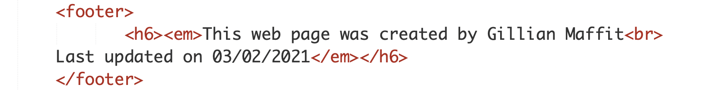
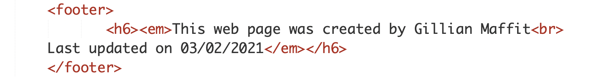

Project 1 Edits & Corrections
For project one I did not have a lot of corrections, it just mainly focused on details.
- I went back to add the closing quotes for those missing it.
- I went back and fixed break tags since they were not indented.
- I also imrpoved the footer to match the requirements needed.

 
